-
Syllabus
Ballet Programs for Children and Youngsters
⚫ Creative Movement (3-5 Years Old)
⚫ Beginners Levels I & II (6-13 Years Old)
⚫ Intermediate Levels I & II (10-16 Years Old)
Special Balletic Program
⚫ Adaptive Ballet for Children and Youngsters With Special Needs (The Schlachte Method™)
⚫ Progressing Ballet Technique
⚫ Private Coaching and Audition Preparation Classes
Adult Fitness Programs
In line with its philosophy and mission, DanzArt’s dance and fitness programs are based on ballet fundamentals and technique to teach children, youngsters and adults the meaning, joy and fulfilment that derives from commitment and hard work in the context of a beautiful form of art, with specifically designed classes to increase technical skills, stamina, and discipline that is appropriate for the student’s age and level.
Even though DanzArt’s curriculum is centered in a balletic program, other dance styles such as jazz and hip-hop are offered as well, encouraging students to complement their dance training with ballet lessons for being ballet the foundation of all technical dance forms and the many benefits it provides to dancers. Taking ballet lessons in addition to other dance styles will give dancers a good base line, will make any other type of dance a lot more easier, will improve their overall dance technique, coordination, body awareness, musicality, and much more.
* See also Some facts about Ballet and The value of Ballet to all types of dancers in USEFUL NOTES.
Creative Movement
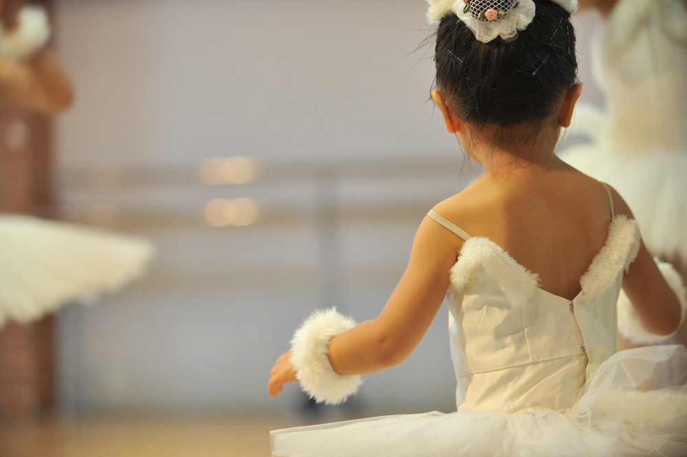
(3-5 Years Old)At this age the class is designed to teach children a love of dance, encourage artistic creativity, develop gross motor skills -through basic ballet positions of hands, arms, feet, legs and head, ballet walks, runs, marches, skips, gallops and leaps-, teach basic elements of stretching, correct posture, develop spatial awareness and musicality, gently set the foundations for dance discipline, and introduce the beginnings of ballet vocabulary in a fun and creative way. In addition to the dancing skills, young dancers learn to take turns, follow directions and carry out simple instructions in a group environment plenty of games, stories and imaginative exercises.
Beginner Levels I & II
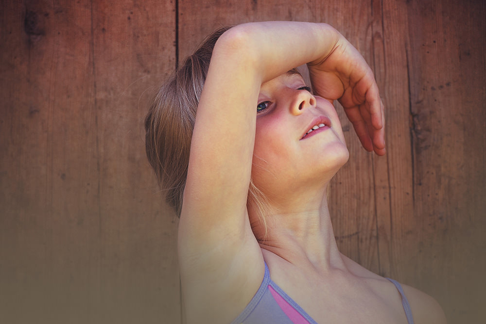
(6-13 Years Old)These levels are focused on developing large and small motor skills and coordination, using conservatory-level ballet standards. Students are introduced to ballet barre and ballet center, to French vocabulary associated with ballet as well as to specific ballet steps utilizing proper ballet technique. Creative and expressive movement, teamwork, music appreciation, and encouraging a love of movement are emphasized.
Intermediate Levels I & II
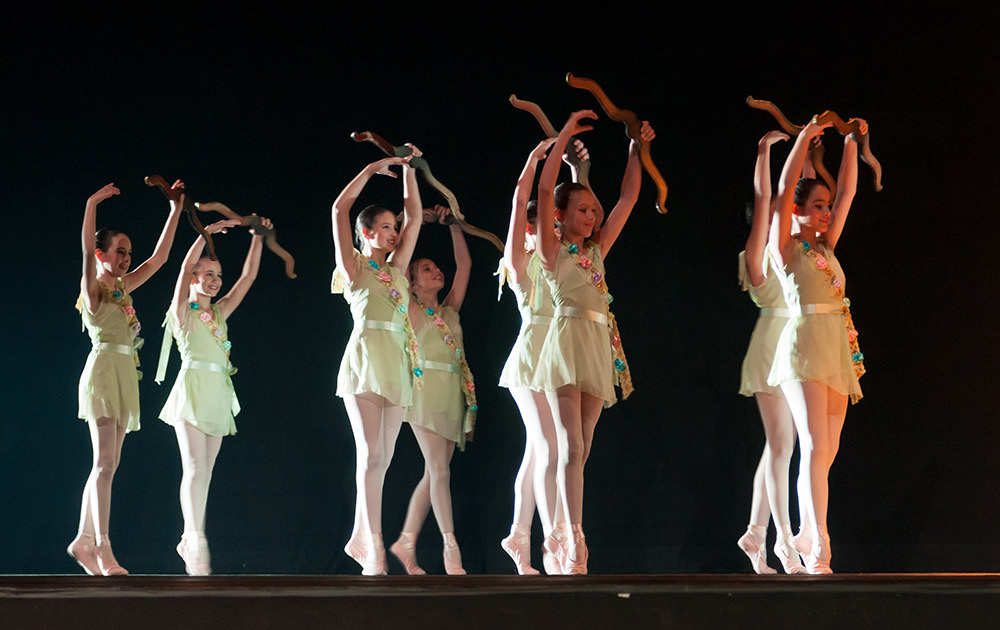
(10-16 Years Old)The primary goal of these classes is to continue developing coordination and encouraging a love and appreciation of proper ballet technique, movement and music. Class work focuses in developing large and small motor skills and French language ballet vocabulary. Students begin to learn more and more complex ballet steps using proper technique and are introduced to specific expressive concepts of movement and how to communicate through it.
* See also Whole Child Integration in USEFUL NOTES.
Adult Balletic Programs
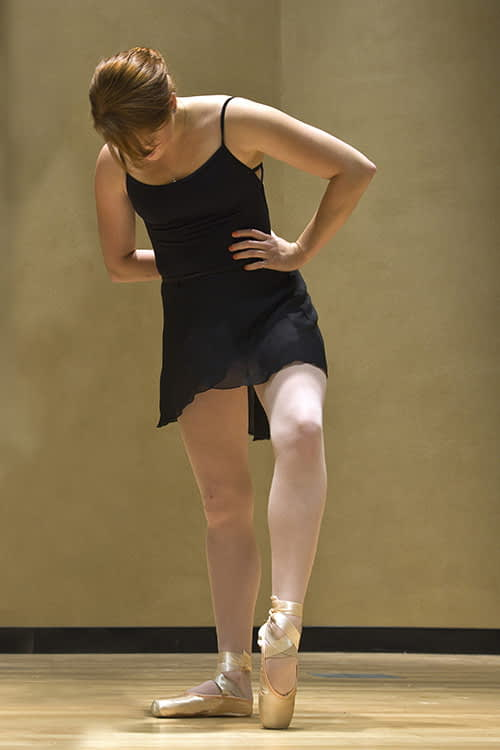Adult Ballet is the new tendency in dance and fitness programs for young, middle-aged and golden age adults, for being Ballet an excellent and comprehensive form of exercise that promotes good health and emotional well-being. In Ballet exercises every muscle is engaged in movement, while broad areas of the brain are utilized to develop balance (to perform fluid movement), artistry (to interpret music) and memory (to learn steps). Additionally, classical music played in ballet class encourages alpha wave development, enhancing creativity and combating depression.
Due to the tremendous benefits in terms of health and emotional well-being it brings with it, more and more adults over the world are taking ballet lessons nowadays as an alternative to other forms of exercise. DanzArt’s Adult Balletic Programs encompass the perfect blend of deep muscle toning with resistance, the grace of Ballet, the flexibility of Yoga and the core strengthening of Pilates. The programs are specifically designed to fulfill the varied needs of adult students, regardless of their age, sex, appearance or dancing skills, providing something for everyone, from beginners to advanced, in a supportive, demanding and enjoyable atmosphere to sheer the pleasure of dance.
Adult Recreational Ballet Classes
Unlike many forms of fitness exercises, Ballet is a complete discipline involving the body, mind and creative expression of the individual. It is an art form and a discipline where the dancer can immerse in the beauty of the music and enter another world. The student will probably find that the physical benefits gained will quickly become secondary to the sheer beauty and joy of dance that he/she will experience.
DanzArt’s Adult Recreational Ballet classes are an enjoyable, non-competitive, and effective way to get fit, toned and supple. They are specifically designed for adults of all ages and skill levels, from absolute beginners who are looking to start a dance training program for the first time to those who quit dancing and wish to return to their passion or even those who never stopped dancing.
Emphasis in class is on correct body alignment/placement, strength and flexibility, and providing formal training in the foundations of Classical Ballet. Adult Recreational Ballet is an open program that offers single drop-in classes to all adults in two different levels, beginners and intermediate dancers.
Beginners Level
Beginner classes are conceived for those students who over the years have harbored a secret desire to dance Ballet, but never stepped foot inside a ballet studio or for those who have a basic understanding of the foundations of Ballet. Students’ ages may range from late teens onwards and the classes concentrate on understanding and improving proper alignment, posture, rotation, flexibility, and coordination, while learning all the basics of Ballet.
Intermediate/Advance
Intermediate/Advance level classes are designed for those dancers wishing to enjoy the wonders of Ballet following an absence of many years or those who have always danced non-professionally. These classes uses the full range of Classical Ballet technique and move at a much quicker pace, offering increased technique and balletic expression, as well as more complex combinations both at the barre and in the center.
Adult Danz-Llet
It consists on adapted adult ballet classes designed for non-dancers, for totally beginners, regardless of their age, size or skills. Classes comprise simplified ballet floor, barre and center, stretch and tone exercises, concentrated in movements that function as deep sculpting tools to strengthen and lengthen muscles. Danz-Llet program is a fun, elegant, challenging and effective workout set to instrumental music that focuses on postural alignment, isometric movements to fatigue and strengthen muscle groups, and stretching exercises to elongate and refine the body shape.
Among its countless benefits, the Adult Danz-Llet Program:
• Is highly enjoyable and fun and helps release stress
• Teaches posture, coordination and musical appreciation
• Encourages poise, grace, creative and artistic expression
• Sculpts your body and tones your muscles without bulking
• Promotes fitness, flexibility and cardiovascular health
• Strengthens back, butt and abdominal muscles
Adaptive Ballet for Children & Youngsters With Special Needs
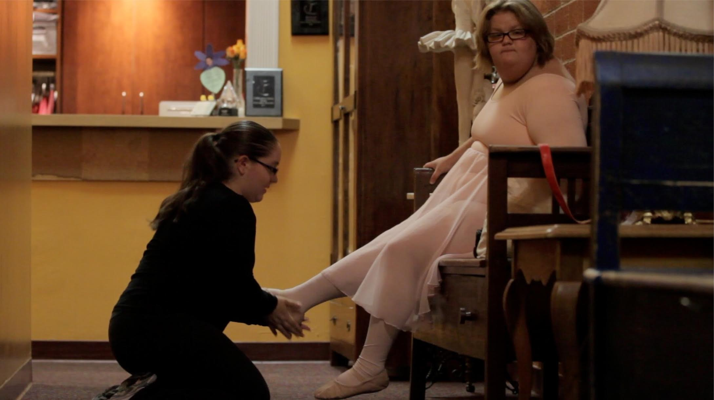Many children and youngsters with disabilities cannot succeed in a traditional ballet class setting and thus are excluded from all the benefits that ballet classes can bring – self-confidence, friendships, self-discipline, and the joy of movement. This program is tailored to assist children with special needs to learn the technique and discipline of ballet and reap its many benefits, using the Schlachte Method™.
The Schlachte Method™
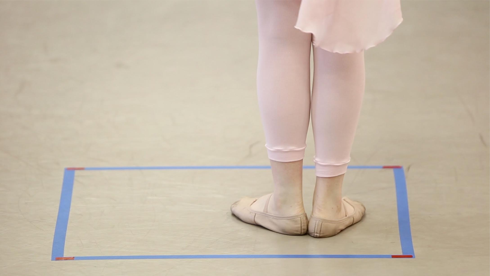The Schlachte Method™ is a ballet-base therapy developed in the United States by Bonnie Schlachte and proven successful in teaching of ballet to children within the autism spectrum, children with learning and developmental disabilities, children with anxiety disorders, behavioral issues, ADHD, blind, deaf, and children who are non-ambulatory as well as neuro-typical children.
This method believes that every child has abilities that can be used as a springboard to learn new skills and enhance each child’s personal sense of accomplishment. Therefore, the methodology uses a wide variety of teaching styles to accommodate all modes of learning and to strengthen each skill set area in all children.
Visual Learning
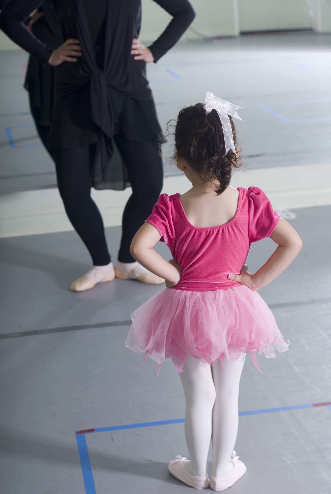The Schlachte Method™ employs various visual teaching methods to assist the visual learner and teach visual learning skills. Each class utilizes a visual schedule to assist the child with sequencing and moving from exercise to exercise. All personal work areas are clearly designated and color-coded so that children can focus on the exercises and know their personal-space boundaries. All exercises are done in front of mirrors to allow children the opportunity to see themselves and to correct their movement when necessary. Each class has an accompanying DVD that the students are expected to watch twice a week between classes. The DVD displays all the visual images used in class to assist with proper ballet technique (i.e. your foot needs to brush the floor with your leg straight in a tendu so the children see a broom taped to a leg with the foot “sweeping” away ash), and shows children doing each exercise.
Auditory Learning
The Schlachte Method™ utilizes classical ballet music that was specifically composed for each class. All music was composed to assist the auditory learner and to teach the auditory skill of timing (when to move) and what emotion is being expressed. Likewise, all music was composed to correlate with the images and the story being told in the DVD. As part of the auditory learning process, the teacher sings (instead of speaking or counting out) each exercise to assist the children in learning the proper combinations.
Vestibular Learning
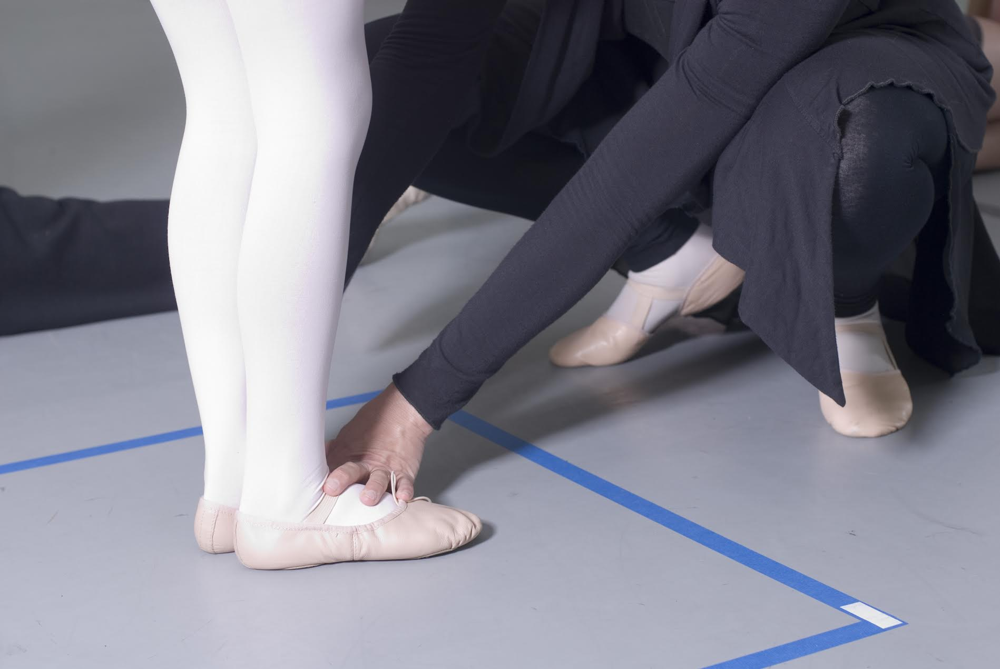The Schlachte Method™ is primarily based on full body movement. It focuses on every part of the body from facial expressions to the tips of the fingers and toes. There are specific exercises in every class designed to assist the children in learning to express emotions through facial expressions, learning to feel movement through the tips of their fingers and toes, and learning to work with the spine (how to curve and straighten it). This method also assists each child in learning body awareness and physical coordination. Also, each class requires various energy levels (depending on the exercise) teaching the children how to regulate their energy levels depending upon the exercise requirements. Likewise, these exercises teach spatial awareness through the designated spaces on the floor and through combinations completed with other students.
Emotional Intelligence
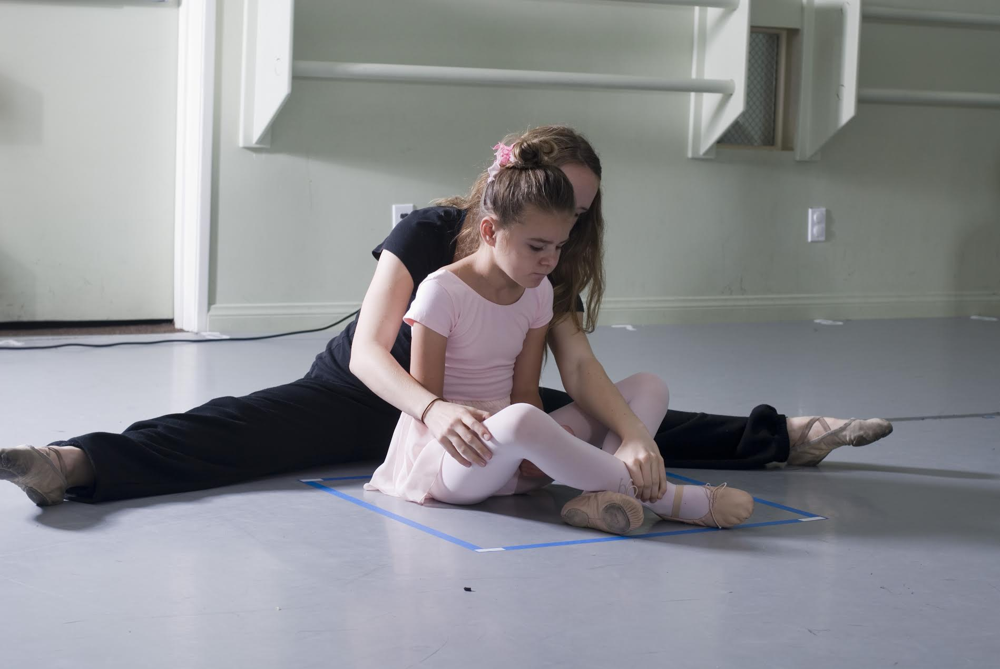The Schlachte Method™ teaches emotional intelligence through various means. The first step in emotional intelligence is the ability to identify emotions. This method teaches children to identify anger, happiness, sadness, surprise, etc. through body movements, musicality, and facial expressions. This method also utilizes story to express emotions. Each exercise has a story that corresponds with the movement and emotions. Children will be told the story and then be taught to express it through movement and facial expression. As part of this method the children will be taught in a safe and structured environment so that they can focus on expressing themselves emotionally without any anxiety or fear. The DVD works to prime the child so that the child knows exactly what is expected in class to alleviate any surprises. The visual schedule assists with reducing anxiety helping the child know what exercise is next and when class will be ending. Any changes to the class structure are told to the child beforehand to prepare them for that which is different. Likewise, any sensory distractions in the studio will be minimized to help the child focus more easily on the ballet instruction.
* See also Therapeutic Benefits of Ballet and Whole Child Integration in USEFUL NOTES.
Pointe Classes
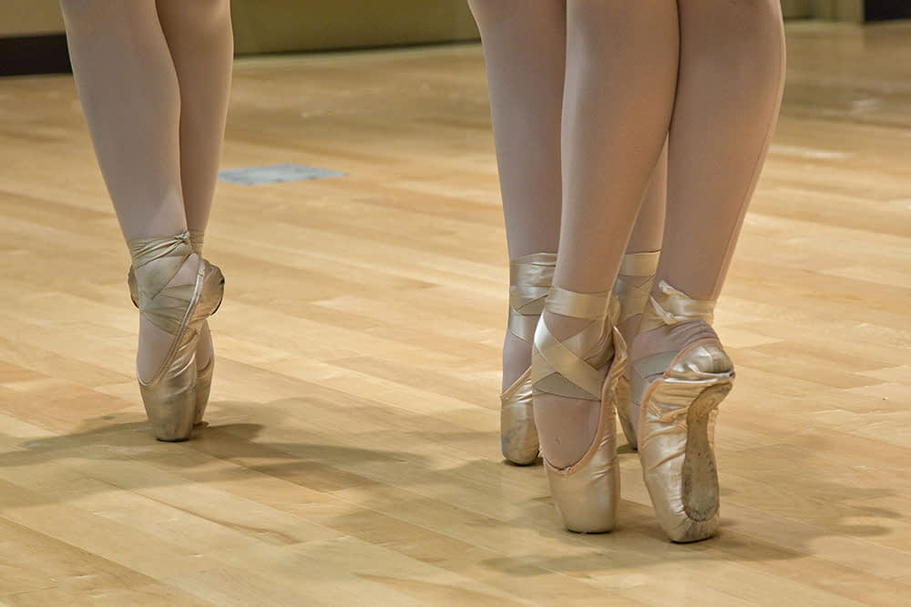These classes are designed for dancers wishing to develop the strength and technique needed to safely progress on pointe and consist on exercises at the barre and the center floor to build strength, articulation and flexibility in the feet, ankles and legs, while developing the ability to control the balance on pointe.
Progressing Ballet Technique
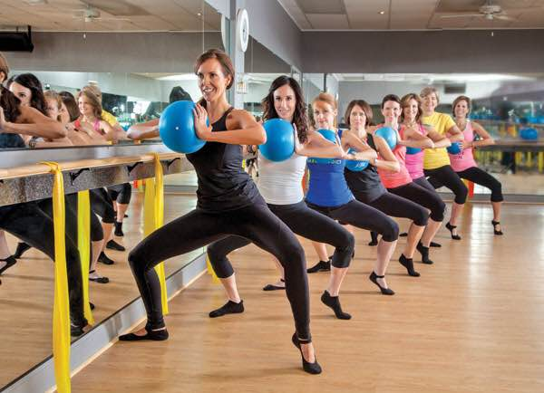This is a complementary course to the regular dance class, which allows the student to focus on the essential muscular groups that a dancer needs to focus on. This technique is designed to help dancers understand the depth of training muscle memory, core strength, stability and alignment, educate them on their own strength's and weakness plus build a knowledge base of their anatomy. The goal of this class is to help a dancer be the strongest and most intelligent dancer they can be.
Private Coaching & Audition Preparation Classes
These classes address individual development with specific corrections and coaching, being an excellent tool for enhancing progress and preparing for auditions, competitions, and performances. This type of one to one coaching allows for accelerated learning, due to the work to the pace of the individual student to correct specific technical difficulties, bad habits and faults, work on specific weaknesses, polish technique, and refine artistry.
Jazz Dance
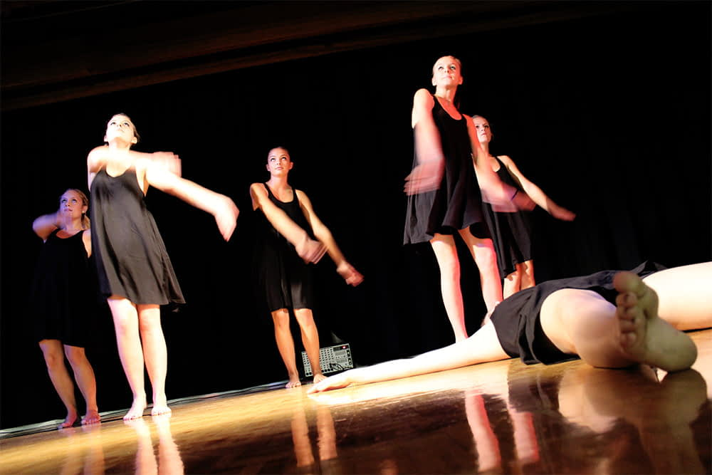Jazz dance is an exciting and ever-evolving dance style full of rhythm and syncopation, that combines techniques of classical ballet and modern dance with the current forms of popular dance. Steeped in the rhythm of jazz music, a true American art form, jazz dance is an energetic and fun type of dancing, consisting of unique moves, fancy footwork, big leaps and quick turns. Classes explore body isolations of the head, shoulders, ribcage, feet, and arms and encourage individual expression and the development of personal style. Jazz dance can be powerful and percussive or expressive and lyrical and is taught with the music of today.
Contemporary Dance
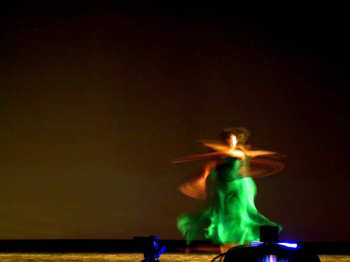Classes are based on modern and contemporary techniques and ideas, with emphasis placed on succession and functionality of movement. The program is aimed at developing awareness of the student´s abilities and limitations through designed exercises and the use of the body, its flexibility range and the creation of internal connections. During the classes, various forms of energy and movement will be addressed. By watching and breathing, focusing and connection-making with the body, deliberate and accidental differences and diversity will be discovered. The differences within each person, his/her presence and consciousness will connect through the quality and embodiment of motion. By means of improvisation and sequences, students will seek various forms of interconnections and disconnections. Enhanced body coordination will be achieved through breathing, for being breath and breathing the most basic connection of the body that will accomplish the liveliness of movement and a sense of connection with other dancers. Succession generated by breath will provide smoothness, but also the desired explosive movement. Through exercises and movement combinations (beginning with simpler movements –the ones a person performs in everyday life- until mastering more complex and technically demanding movements over time), students will be guided to recognize the established connections of the body and explore their possibilities on their own terms.
Latin Moves & Senses
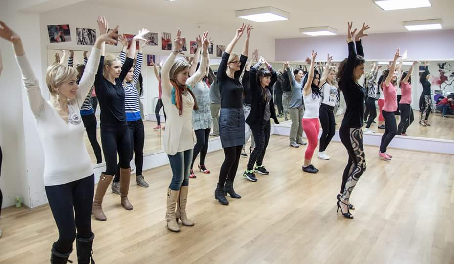In Latin Moves & Senses Program students are not only taught step-by-step all the technical elements of South American and Caribbean dance styles - Salsa, Merengue, Bachata, Cha Cha Cha, Son, Bolero, Tango… -, but also the cultural insights of each style, how to feel and interpret Latin American and Caribbean beats and rhythms, how to improve posture and move with sensual grace and fluid movements, and how to dance with authentic Latin passion… All that in Spanish spoken classes!
Latin Moves & Senses makes you exercise the whole body, lose weight, and get fit with isolated warm-up and aerobic exercises, working on targeted zones, depending on the themes or dance styles selected for each class or set of classes. Furthermore, this dance program is an excellent means to stimulate brain functions and enhance concentration and memory skills through movement combination and sequencing, improve cardiovascular condition and physical performance, gain control of the body, increase flexibility, reduce stiffness, relief stress, and have fun.
Dance Body Barre
Yoga
Pilates
Individual Training
TopCopyright © 2016 DanZart d.o.o.